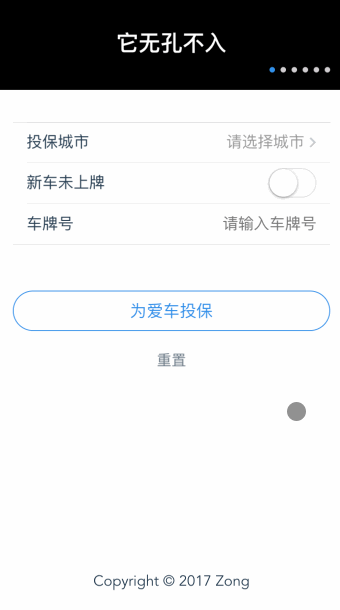

<div ref="streamContainer" class="stream-container">
    <div class="post-list-container post-list-container-shadow">
        <div class="post">
            <div class="post-head-wrapper"
                 style="background-image: url('/2017/07/01/初试vux/logo.jpeg')">
                <div class="post-title">
                    初试VUX
                    <div class="post-meta">
                        <time datetime="2017-07-01T12:22:47.000Z" itemprop="datePublished">
                            2017-07-01 12:22
                        </time>&nbsp;
                        
                        
                        <i class="material-icons" style="">folder</i>
                        
                        <a href='/categories/Vue/'>Vue</a>
                        
                        
    
                        
                        
                        <i class="material-icons" style="">label</i>
                        
                        <a href='/tags/Vue/'>Vue</a>, 
                        
                        <a href='/tags/Vux/'>Vux</a>
                        
                        
                    </div>
                </div>
            </div>
    
            <div class="post-body-wrapper">
                <div class="post-body">
                    <!-- no node -->

<span id="more"></span>

<blockquote>
<p>借机，重写单位项目，那么挑了一些框架，最终决定用VUX。<br>讲真，文档看起来有点吃力，要不断尝试。<br>有趣，可以自己扯UI。<br>费时，真的费时。<br>那么，来分享下吧。</p>
</blockquote>
<h2 id="vux-loader"><a href="#vux-loader" class="headerlink" title="vux-loader"></a>vux-loader</h2><p>在<code>build/webpack.base.conf.js</code>进行单独配置：</p>
<pre class="line-numbers language-javascript"><code class="language-javascript"><span class="token keyword">const</span> vuxLoader <span class="token operator">=</span> <span class="token function">require</span><span class="token punctuation">(</span><span class="token string">'vux-loader'</span><span class="token punctuation">)</span>
<span class="token keyword">const</span> webpackConfig <span class="token operator">=</span> originalConfig <span class="token comment" spellcheck="true">// 原来的 module.exports 代码赋值给变量 webpackConfig</span>

module<span class="token punctuation">.</span>exports <span class="token operator">=</span> vuxLoader<span class="token punctuation">.</span><span class="token function">merge</span><span class="token punctuation">(</span>webpackConfig<span class="token punctuation">,</span> <span class="token operator">&amp;</span>#<span class="token number">123</span><span class="token punctuation">;</span>
  plugins<span class="token punctuation">:</span> <span class="token punctuation">[</span><span class="token string">'vux-ui'</span><span class="token punctuation">,</span><span class="token string">'duplicate-style'</span><span class="token punctuation">]</span>
<span class="token operator">&amp;</span>#<span class="token number">125</span><span class="token punctuation">;</span><span class="token punctuation">)</span>
<span aria-hidden="true" class="line-numbers-rows"><span></span><span></span><span></span><span></span><span></span><span></span></span></code></pre>
<h2 id="vue-router"><a href="#vue-router" class="headerlink" title="vue-router"></a>vue-router</h2><h3 id="编程式的导航"><a href="#编程式的导航" class="headerlink" title="编程式的导航"></a>编程式的导航</h3><h4 id="router-push-location"><a href="#router-push-location" class="headerlink" title="router.push(location)"></a><code>router.push(location)</code></h4><table>
<thead>
<tr>
<th>声明式</th>
<th>编程式</th>
</tr>
</thead>
<tbody><tr>
<td><code>&lt;router-link :to=&quot;...&quot;&gt;</code></td>
<td><code>router.push(...)</code></td>
</tr>
</tbody></table>
<h3 id="重定向"><a href="#重定向" class="headerlink" title="重定向"></a>重定向</h3><p>重定向也是通过 <code>routes</code> 配置来完成，下面例子是从 <code>/a</code> 重定向到 <code>/b</code>：</p>
<pre class="line-numbers language-javascript"><code class="language-javascript"><span class="token keyword">const</span> router <span class="token operator">=</span> <span class="token keyword">new</span> <span class="token class-name">VueRouter</span><span class="token punctuation">(</span><span class="token operator">&amp;</span>#<span class="token number">123</span><span class="token punctuation">;</span>
  routes<span class="token punctuation">:</span> <span class="token punctuation">[</span>
    <span class="token operator">&amp;</span>#<span class="token number">123</span><span class="token punctuation">;</span> path<span class="token punctuation">:</span> <span class="token string">'/a'</span><span class="token punctuation">,</span> redirect<span class="token punctuation">:</span> <span class="token string">'/b'</span> <span class="token operator">&amp;</span>#<span class="token number">125</span><span class="token punctuation">;</span>
  <span class="token punctuation">]</span>
<span class="token operator">&amp;</span>#<span class="token number">125</span><span class="token punctuation">;</span><span class="token punctuation">)</span>
<span aria-hidden="true" class="line-numbers-rows"><span></span><span></span><span></span><span></span><span></span></span></code></pre>
<h2 id="XIcon"><a href="#XIcon" class="headerlink" title="XIcon"></a>XIcon</h2><p><strong>深坑！</strong></p>
<p>根本不需要写这句：</p>
<p><code>import &#123; XIcon &#125; from &#39;vux&#39;</code></p>
<p>直接用就好了</p>
<pre class="line-numbers language-html"><code class="language-html"><span class="token tag"><span class="token tag"><span class="token punctuation">&lt;</span>x-icon</span> <span class="token attr-name">type</span><span class="token attr-value"><span class="token punctuation">=</span><span class="token punctuation">"</span>ios-arrow-up<span class="token punctuation">"</span></span> <span class="token attr-name">class</span><span class="token attr-value"><span class="token punctuation">=</span><span class="token punctuation">"</span>icon-red<span class="token punctuation">"</span></span><span class="token punctuation">></span></span><span class="token tag"><span class="token tag"><span class="token punctuation">&lt;/</span>x-icon</span><span class="token punctuation">></span></span>
<span class="token tag"><span class="token tag"><span class="token punctuation">&lt;</span>x-icon</span> <span class="token attr-name">type</span><span class="token attr-value"><span class="token punctuation">=</span><span class="token punctuation">"</span>ios-arrow-up<span class="token punctuation">"</span></span> <span class="token attr-name">size</span><span class="token attr-value"><span class="token punctuation">=</span><span class="token punctuation">"</span>30<span class="token punctuation">"</span></span><span class="token punctuation">></span></span><span class="token tag"><span class="token tag"><span class="token punctuation">&lt;/</span>x-icon</span><span class="token punctuation">></span></span>
<span aria-hidden="true" class="line-numbers-rows"><span></span><span></span></span></code></pre>
<h2 id="VUEG"><a href="#VUEG" class="headerlink" title="VUEG"></a>VUEG</h2><p>来添加转场动画，配置<code>src/main.js</code>：</p>
<pre class="line-numbers language-javascript"><code class="language-javascript"><span class="token keyword">import</span> Vue <span class="token keyword">from</span> <span class="token string">'vue'</span>
<span class="token keyword">import</span> router <span class="token keyword">from</span> <span class="token string">'./router'</span>
<span class="token keyword">import</span> vueg <span class="token keyword">from</span> <span class="token string">'vueg'</span>
<span class="token keyword">import</span> <span class="token string">'vueg/css/transition-min.css'</span>

<span class="token keyword">const</span> options <span class="token operator">=</span> <span class="token operator">&amp;</span>#<span class="token number">123</span><span class="token punctuation">;</span>
  duration<span class="token punctuation">:</span> <span class="token string">'0.3'</span><span class="token punctuation">,</span>
  firstEntryDisable<span class="token punctuation">:</span> <span class="token boolean">false</span><span class="token punctuation">,</span>
  firstEntryDuration<span class="token punctuation">:</span> <span class="token string">'.6'</span><span class="token punctuation">,</span>
  forwardAnim<span class="token punctuation">:</span> <span class="token string">'fadeInRight'</span><span class="token punctuation">,</span>
  backAnim<span class="token punctuation">:</span> <span class="token string">'fadeInLeft'</span><span class="token punctuation">,</span>
  sameDepthDisable<span class="token punctuation">:</span> <span class="token boolean">false</span><span class="token punctuation">,</span>
  tabs<span class="token punctuation">:</span> <span class="token punctuation">[</span><span class="token operator">&amp;</span>#<span class="token number">123</span><span class="token punctuation">;</span>name<span class="token punctuation">:</span> <span class="token string">'Home'</span><span class="token operator">&amp;</span>#<span class="token number">125</span><span class="token punctuation">;</span><span class="token punctuation">,</span> <span class="token operator">&amp;</span>#<span class="token number">123</span><span class="token punctuation">;</span>name<span class="token punctuation">:</span> <span class="token string">'OwnerInfo'</span><span class="token operator">&amp;</span>#<span class="token number">125</span><span class="token punctuation">;</span><span class="token punctuation">]</span><span class="token punctuation">,</span>
  tabsDisable<span class="token punctuation">:</span> <span class="token boolean">false</span><span class="token punctuation">,</span>
  disable<span class="token punctuation">:</span> <span class="token boolean">true</span>
<span class="token operator">&amp;</span>#<span class="token number">125</span><span class="token punctuation">;</span>

Vue<span class="token punctuation">.</span><span class="token function">use</span><span class="token punctuation">(</span>vueg<span class="token punctuation">,</span> router<span class="token punctuation">,</span> options<span class="token punctuation">)</span>
<span aria-hidden="true" class="line-numbers-rows"><span></span><span></span><span></span><span></span><span></span><span></span><span></span><span></span><span></span><span></span><span></span><span></span><span></span><span></span><span></span><span></span><span></span><span></span></span></code></pre>
<p><a target="_blank" rel="noopener" href="https://github.com/jaweii/vueg#%E9%85%8D%E7%BD%AE%E9%A1%B9--config">配置项详解</a></p>
<p>也可以用<code>animate.css</code>自己写一个……</p>
<h2 id="vue-dropzone"><a href="#vue-dropzone" class="headerlink" title="vue-dropzone"></a>vue-dropzone</h2><p>一个上传文件的插件，由于文档内容比较多，没有深入去读，已经写在源码里，但是被我注释掉了。后续再去了解吧。</p>
<h2 id="DEMO"><a href="#DEMO" class="headerlink" title="DEMO"></a>DEMO</h2><p><br><a target="_blank" rel="noopener" href="https://github.com/zongzi531/vux-demo-test">源码</a></p>

                </div>
            </div>

            
            
            
    
            
    
            
        </div>
    </div>
    
</div>


